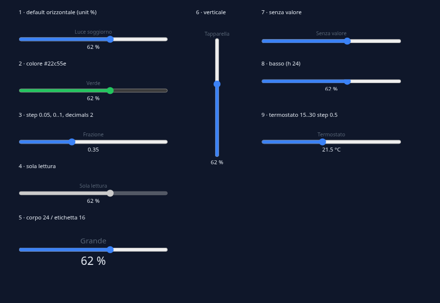
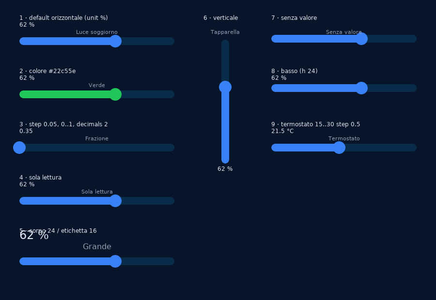
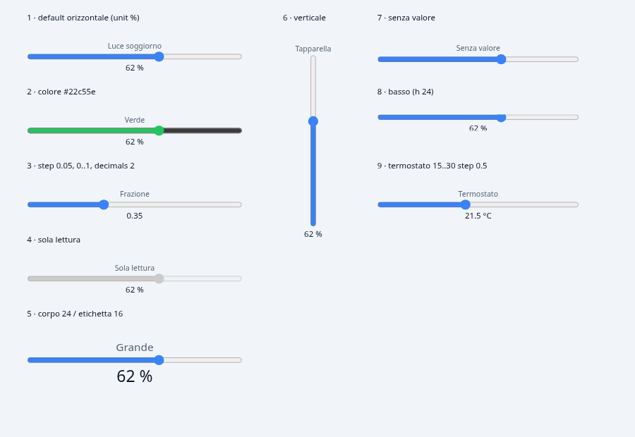
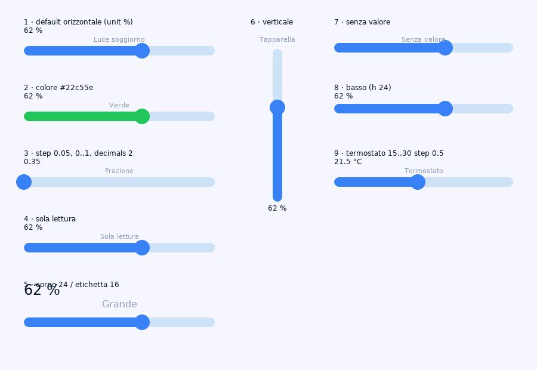

Revisione dello slider
30-10-2026 · /revisione-oggetto slider · web (SVG) e LVGL 8.3.5 · niente codice scritto: questa è la proposta da approvare.
- Uso: domotica e impianti, con priorità alla domotica. «È un oggetto molto importante che si deve adattare a vari stili grafici».
- Web: lo slider diventa un disegno SVG proprio, con dito, mouse e tastiera gestiti a mano. Il controllo nativo del browser se ne va.
- Stile «classico»: uno solo per i due motori, quello di LVGL di oggi. Sul web la traccia diventa più spessa.
- Stili: classico, pillola, piastra (domotica), ISA-101 (piatto).
- Modi: bipolare, valore misurato (PV), bande e tacche, ritorno a molla. L'intervallo a due cursori va in Appunti.
- Tacche: per passo, nelle unità del valore. Molla: scrive mentre tieni, al rilascio torna al riposo e scrive il riposo.
- Difetti: dentro il piano, come prima fase.
- Immagine di sfondo: dietro tutto il riquadro (
bg_image, che esiste già), con un'opacità da regolare, e la parte vuota della traccia che può lasciarla vedere.
1. Com'è oggi
La stessa pagina di prova (nove slider, progetto-di-prova/, accanto a questa tavola) sui due motori, su sfondo scuro e chiaro.




Cosa si vede nelle istantanee
- Frazione 0..1 con passo 0,05 (n. 3): su LVGL il cursore sta a 0 con il valore 0,35. Il range è intero, quindi 0..1 ha due posizioni sole.
- Sola lettura (n. 4): su LVGL è identico agli altri e si muove. Sul web è grigio e fermo.
- Valore: web sotto la traccia e centrato; LVGL sopra il riquadro, a sinistra. Col corpo 24 (n. 5) il valore LVGL copre il testo che sta sopra.
- Riquadro basso (n. 8, h 24): sul web il valore è tagliato a metà.
- Etichetta su LVGL: con «senza valore» (n. 7) finisce sopra il cursore.
2. Anatomia
Ogni parte con il campo che la governa. I campi nuovi hanno il prefisso slider_, come gauge_ticks o bar_mode. Quelli che esistono già si riusano col loro significato.
3. Stili × stati × sfondo
Ogni casella è un riquadro di 240×64. Il colore d'accento è fill, quindi #3b82f6 di default. Gli stati «qualità» e «allarme» sono gli effetti generici della pagina: lo slider non li rifà, li riceve.
4. Modi di funzionamento
I modi si combinano con qualunque stile. Qui sono disegnati sul classico e, dove serve a capire, sulla piastra.
- Il dito prende il cursore: lo slider si ingrandisce (stato «trascinamento»).
- Mentre si trascina, scrive il valore al massimo 5 volte al secondo, anche con «scrivi al rilascio» acceso. La molla lo scavalca, e il pannello lo dice.
- Al rilascio il cursore torna a
slider_rest_valuein 150 ms, e scrive quel valore una volta. - Conferma e comando critico non si combinano con la molla: il validatore lo segnala come errore, perché una conferma a ogni scrittura renderebbe la leva inutilizzabile.
4 bis. Immagine dietro lo slider
bg_image esiste già per tutti gli oggetti: sul web lo slider lo disegna, su LVGL no (si aggiunge in fase 1, riusando il pezzo che disegna gli sfondi di pagina). Le novità sono due campi: bg_image_opacity, universale come bg_image, e slider_track_opacity, che lascia vedere l'immagine attraverso la parte vuota. Il «tramonto» qui sotto fa le veci di una fotografia.
5. I campi
6. Note per motore
Web — SvgCanvas.tsx
- Un componente suo,
canvas/slider/, invece del ramo dentroSvgCanvas.tsx: disegno puro (geometria in una funzione pura, testabile senza DOM) più la gestione del puntatore. - Puntatore: Pointer Events con
setPointerCapture(mouse, dito e penna in un solo percorso),touch-action:nonesul gruppo. Area di tocco: tutto il riquadro, e almeno 44 px di spessore anche se la traccia è sottile. - Tastiera:
tabindexerole="slider"conaria-valuemin/max/now; frecce = un passo, PagSu/PagGiù = una tacca marcata (o il 10 %), Home/Fine = estremi. Anello di focus visibile. - In attesa: dopo la scrittura il cursore resta dov'è, col bordo tratteggiato, finché il tag non arriva o per 3 s. Poi si allinea al tag. Oggi salta indietro subito.
- In edit: stesso disegno,
pointerEvents:"none"e hit-rect, come gli altri (WYSIWYG). - Sarà il primo oggetto con un gestore del puntatore suo. Lo schema servirà poi al bottone: per questo lo scrivo riusabile, ma senza toccare il bottone in questo piano.
LVGL — lvgl_render.rs
- Resta
lv_slider. Gli stili vanno sulle tre parti:MAIN(traccia),INDICATOR(riempimento),KNOB(cursore: raggio, padding = dimensione, colore). - Range non intero: la barra lavora in passi (0..N con N = (max−min)/step), e il valore vero è min + i·step. Si scrive
Floatquando il passo o il range non sono interi. - Scrittura:
LV_EVENT_RELEASEDper «scrivi al rilascio», deadband, sola lettura (viaCLICKABLE), conferma e comando critico con la conferma che i bottoni hanno già (RegolaConferma). - Piastra: traccia grande quanto il riquadro, cursore con opacità 0. Etichetta, valore e icona sono
lv_labelsopra. Le icone sono SVG rasterizzati una volta con resvg, che il viewer usa già per il tubo. - Tacche e bande:
lv_lineed etichette disegnate a mano, nonlv_meter, che è circolare. Le bande sono rettangoli sotto la traccia. - PV: un triangolino (
lv_objcon raggio 0, o una linea) spostato a ogni valore, come la lancetta SP del gauge. - Molla: un'animazione
lv_animdi 150 ms sul valore, poi la scrittura. - Il valore torna dentro il riquadro. Fallback dichiarati: niente ombre, niente gradienti; nello stile ISA il cursore rettangolare è un
KNOBcon raggio 2.
7. Le fasi
Ogni fase sta in una sessione e finisce con qualcosa da provare, sulla pagina di prova e sui gemelli demo-items-*.
8. Fuori da questo piano
- Seme — uno stile grafico di progetto per tutti gli oggetti (per esempio «ISA-101 ovunque»), come
symbol_stylefa per i simboli. Qui lo stile è per oggetto, e un progetto lo sceglie oggetto per oggetto. - Seme — lo stato «in attesa» per tutte le scritture (bottone, setpoint, checkbox). Lo slider lo ha suo, in fase 1, perché è quello che salta indietro.
- Appunti — l'intervallo a due cursori (minimo e massimo su due tag).
- Il bottone col gestore del puntatore nuovo: dopo, se serve.
9. Decise dopo la prima stesura
- Icone della piastra: un insieme fisso di 8 (lampadina, tapparella, termometro, ventola, presa, volume, goccia, sole), uguali sui due motori.
- Riposo della molla, se non lo scrivi: l'origine se lo slider è bipolare, altrimenti il minimo.
- Stile classico: campo assente = classico, così i progetti esistenti non scrivono niente di nuovo.